Caso 014 · Taller DIEZ 05 · 2017 · infraestructura pública (estación de bomberos)
Consigna C: cuestiono un supuesto que el encargo no impone, que la estación sea un solo edificio cuya forma copia la parcela triangular. El boceto sugiere un volumen horizontal y alargado; lo leo como la nave de salida, y la separo de lo que no necesita salir en 30 s: la guardia, el mando y lo público. El resultado son dos piezas ortogonales que no copian el triángulo (3 niveles solo en la torre), unidas por una calle cubierta de 4 m que es a la vez recorrido de alarma (escalera abierta, galerías y ascensor), chimenea de ventilación cruzada y hueco de luz entre ambas.
Aw, humedad alta, 1.500 mm/año con ciclones, sol casi cenital. Estrategia: protección solar y ventilación cruzada, masa para ciclones. Aleros de 1,0 m en torre, vuelo de 2,3 m sobre la calle cubierta, huecos del 14-18 % en la fachada sur, dormitorios con ventana y puerta al pasillo enfrentadas, y la calle cubierta como chimenea de 10,6 m. Los muros son de hormigón y bloque, que resisten viento y lluvia horizontal.
| Criterio | Partido 1 · un anillo de una planta alrededor de un patio | Partido 2 · nave + torre + calle cubierta (elegido) |
|---|---|---|
| Huella | ~1.050 m² (46 % de la parcela) | 530 m² en planta baja de piezas + 3 niveles de torre |
| Parcela | Ocupa casi todo el triángulo; la plataforma invade la avenida | Deja los vértices al norte y al oeste para patio, laguna y aparcamiento |
| Aparcamiento | 14 plazas = 350 m² no caben | 11 plazas en cuñas libres del triángulo |
| Clima | Patio central sin ventilación cruzada con 25 m de anillo | Calle cubierta y torre estrecha (8 m): ventilación cruzada en todos los dormitorios |
| Alarma | Recorrido horizontal largo hasta los vehículos | Escalera abierta junto a la nave (5 m por tramo), puerta de personal a la nave a 1 m de su pie |
| Entorno | Un volumen opaco bajo | Dos escalas: nave baja a la avenida y torre de 10,6 m hacia la vía curva |
Descarto el partido 1 porque no cabe el aparcamiento y la plataforma de salida invade la avenida. El 2 resuelve ambas cosas sin tocar el programa.
Envolventes (torre):
| A · bloque macizo enfoscado y claro (elegida) | B · fachada ligera ventilada de lamas | |
|---|---|---|
| Hueco | Sur 16 %, este 12 %, norte 10 % | Sur 40 %, a base de lamas verticales |
| Ventilación | Cruzada por ventana-puerta al pasillo | Cámara ventilada de 8 cm |
| Protección solar | Alero de 1,0 m + vierteaguas | Lamas orientables |
| Ciclón / lluvia | Resiste impactos y presión; sin elementos sueltos | Succión sobre lamas; 1.500 mm/año ponen en riesgo la madera |
| Coste | Mano de obra de albañilería local | Taller de carpintería especializada |
Elijo A: en un clima Aw con ciclones, una pieza sin lamas ni elementos sueltos reduce el riesgo de desprendimiento, y el hueco del 16 % con alero de 1,0 m frente a un sol casi cenital da sombra suficiente en las plantas sin necesidad de lamas.
Sistemas constructivos. Comparo masivo en obra (muros de hormigón de 30 cm y bloque de 25 cm, forjados de hormigón de 25 cm) con ligero en seco (pórticos de acero y panel sándwich). El acero ligero monta antes, pero en un clima marino con sal y 1.500 mm sufre corrosión, y la succión de ciclón sobre cubierta de panel exigiría anclajes especiales; los bomberos requieren además que el edificio siga en pie. El hormigón y el bloque se levantan con albañilería local y sin transporte especial a un solar urbano llano, y dan inercia a una torre sin refrigeración. Elijo el masivo. Plazo y presupuesto no constan, así que la decisión no se basa en cifras de coste.
Asentamiento. El terreno es llano: no hay pendiente que escalonar. Comparo "a ras" con "elevada 0,30 m". Opto por plataforma a cota 0,00 con un 2 % de caída hacia la avenida (sur), el oeste y la laguna norte. Con ello, la nave queda 0,26-0,64 m por encima del perímetro de la parcela, sin excavación salvo zapatas y laguna (-0,45 m).
PB: la nave (336 m²) abre al sur; al norte se encadena el equipo de intervención (35 m²) y el taller (18 m²) con salida directa al patio de ejercicios. Entre ambas piezas, la calle cubierta (56 m²). En la torre, vestíbulo (42,9 m²) con control y radio (33 m²) a un lado, formación y reuniones (36,3 m²) al otro y, en el brazo norte, mando (42 m²) y cuarto eléctrico con grupo (30 m²). N1: dormitorios 1-4 de 25,1 m², 5-6 de 22,8 m², jefe de 26,4 m² y dos baños de 17,2 m². N2: estar-comedor de 72,6 m², cocina de 30,4 m², gimnasio de 31,7 m², descanso de 42 m² y lavandería de 30 m².
Recorrido de alarma. El bombero baja por la escalera de la calle cubierta (18 contrahuellas de 17,8 cm, huella 28 cm, 2t+h = 63,6 cm, ancho 1,50 m) y cruza una puerta de 1,0 m (y = 8,9) que da directamente a la nave junto al pie de la escalera, a la altura de los vehículos. Otras dos puertas, en y = 15,6 e y = 20,0, comunican la calle cubierta con la nave más al norte; el equipo de intervención se alcanza desde la nave y desde el patio.
| Exigido | Propuesto | Cumple / desviación |
|---|---|---|
| Plantas | P01-P04 (PB, N1, N2, cubierta) | Cumple |
| Secciones | S01 (longitudinal), S02 (nave y patio), S03 (torre) | Cumple |
| Alzados | S04 (sur y norte), S05 (este), S06 (oeste) | Cumple |
| Detalles constructivos | D01 a 1:20, fachada de cimentación a cubierta | Cumple |
| Espacios exteriores | U02 con curvas cada 0,10 m, pavimentos, laguna, colectores; U01 situación | Cumple |
| Vehículos terrestres | 3 (autobomba urbana, pesada, rescate/4x4) en 336 m² de nave | Cumple (nº a definir) |
| Embarcaciones | 2 lanchas con remolque, puerta de 6 m | Cumple |
| Recepción y control | Vestíbulo 42,9 m² + control 33,0 m² | Cumple |
| Mando y oficinas | 42,0 m² | Cumple |
| Alojamiento de guardia | 6 dormitorios (4 de 25,1 m², 2 de 22,8 m²), jefe 26,4 m², 2 baños de 17,2 m² | Cumple |
| Estar, comedor, cocina | 72,6 + 30,4 m² (más gimnasio, descanso y lavandería) | Cumple |
| Formación y reuniones | 36,3 m² | Cumple |
| Aseos, vestuarios, limpieza, instalaciones | Aseo accesible 11,6 m², aseo 10,9 m², aseo de personal 6,2 m², limpieza 5,8 m², cuarto eléctrico 30 m², equipo 35 m² | Cumple |
| Aparcamiento | 8 de personal + 3 de visitas (1 accesible) | Cumple |
| Superficie 980-1.640 m² | 1.107 m² cerrados; 1.212 m² con calle cubierta y galerías | Cumple |
| PB+1 o PB+2 | Torre PB+2 (10,6 m), nave PB | Cumple |
| Retranqueos "habituales" | Mínimo 4,0 m al lindero NO (esquina de la nave); 6 m al este | Cumple si el retranqueo local es ≤ 4 m; el aparcamiento 2 se acerca a 1,3 m del lindero NO: desviación posible según ordenanza, se retrae 3 plazas si se exige |
| Reconocible como equipamiento público | Torre con escalera abierta y nave con puertas seccionales | Cumple |
Desviaciones y avisos.
| Elemento | Material (modelo) | Espesor | Motivo |
|---|---|---|---|
| Cubierta nave | hormigón, impermeabilización bicapa autoprotegida | 55 cm; pendiente 5 % al norte | Aguas hacia canalón y laguna; luz de 14 m |
| Cubierta torre y calle | hormigón, impermeabilización bicapa y mortero de pendiente | 25 cm + 6 cm; 3 % al norte | Alero de 1,0 m y vuelo de 2,3 m |
| Fachada torre | bloque de hormigón hueco, enfoscado hidrófugo, pintura blanca reflectante | 25 cm + 1,5 cm | Resiste ciclón; refleja sol cenital |
| Fachada nave | hormigón visto | 30 cm | Masa, durabilidad con salitre |
| Tabiques | bloque con enlucido de yeso | 10 cm | Rapidez; bloque en seco |
| Suelos | losa pulida en nave; baldosa en servicios; tarima en dormitorios y descanso | 20 cm / 3 cm | Resistencia a vehículos; confort |
| Techos | losa vista pintada; falso techo registrable en pasillos | Paso de instalaciones | |
| Carpinterías | madera con doble vidrio (D01) y contraventanas | Cierre ante ciclón | |
| Puertas de la nave | seccionales de 4,4 y 6,0 m, altura 4,2 m | Paso de vehículos de 3,3 m |
Suelo a cota 0,00 sin rampas en PB. Puertas de 0,9-1,0 m; pasillos de 1,4 m; aseo accesible de 3,4 x 3,4 m con puerta de 0,9 m hacia fuera. Un ascensor (hueco 1,30 x 1,50 m, cabina 1,10 x 1,40 m) en la galería sirve a N1 y N2, de modo que personal con movilidad reducida llega al pasillo, comedor, gimnasio y mando. Los baños de N1 no son accesibles (2,6 x 6,6 m con cabinas y mamparas); los dormitorios dejan 0,70 m libres a un lado de las camas y delante del armario. Evacuación: PB sale por el vestíbulo (puerta doble de 1,6 m), por el este (1,1 m) y por el patio (1,0 m); N1 y N2, por la escalera (ver desviación 1).
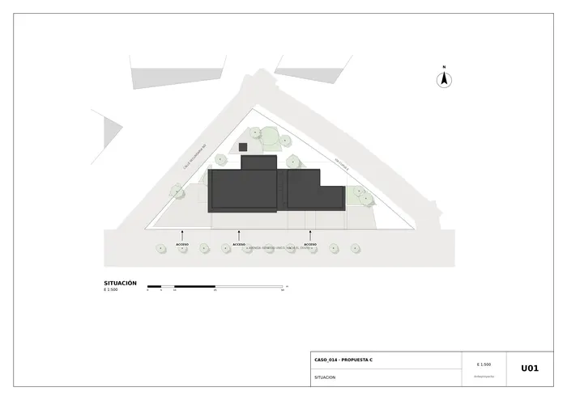
U01 · Situación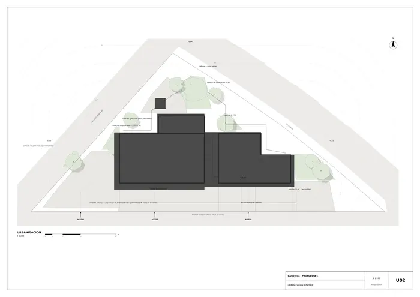
U02 · Urbanización y paisaje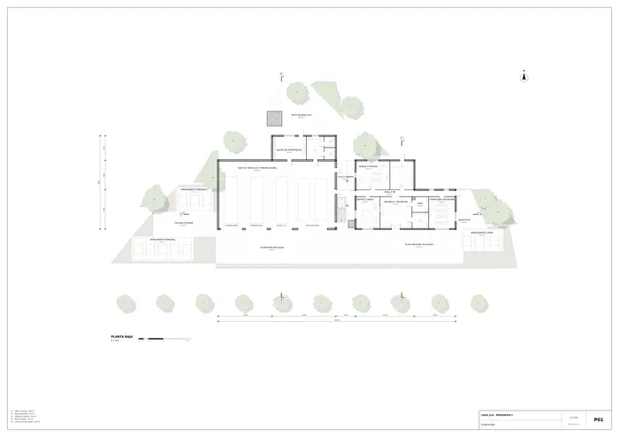
P01 · Planta baja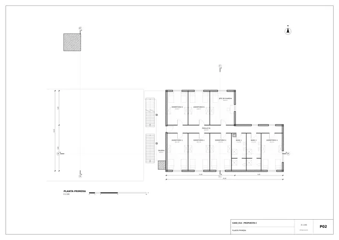
P02 · Planta primera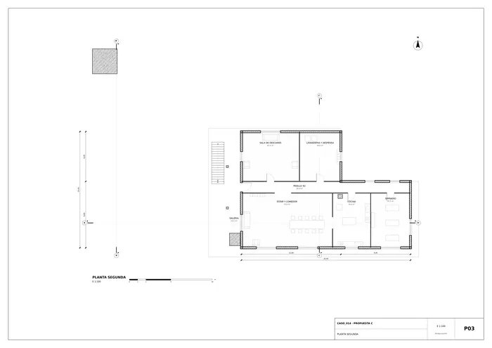
P03 · Planta segunda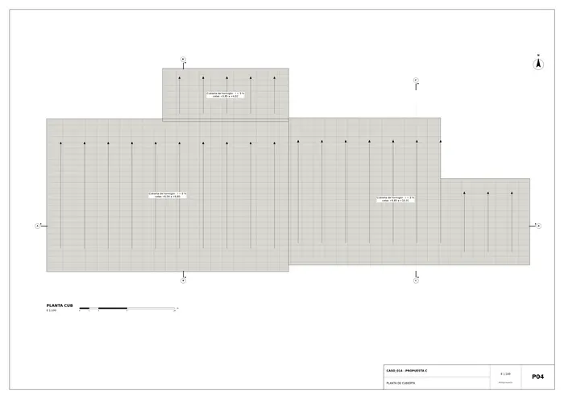
P04 · Planta de cubierta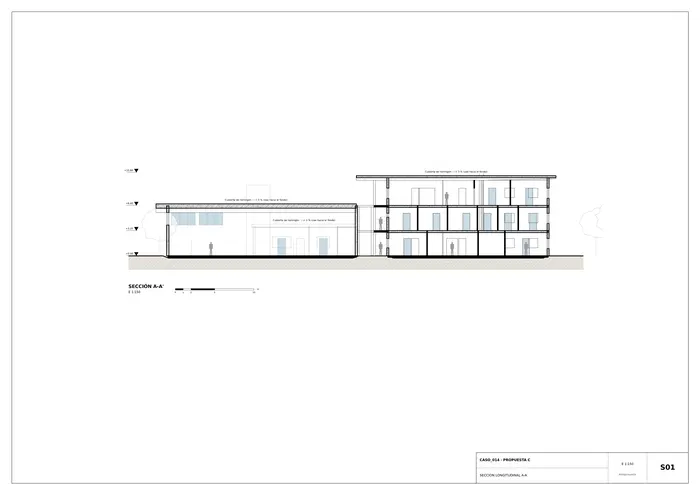
S01 · Sección longitudinal A-A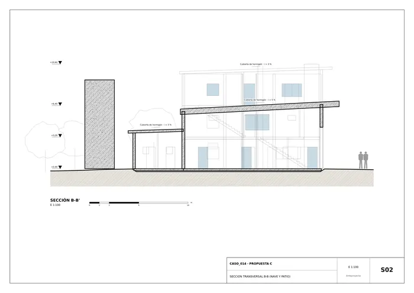
S02 · Sección transversal B-B (nave y patio)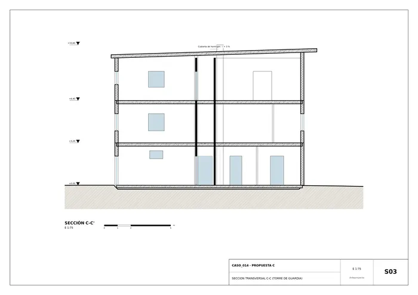
S03 · Sección transversal C-C (torre de guardia)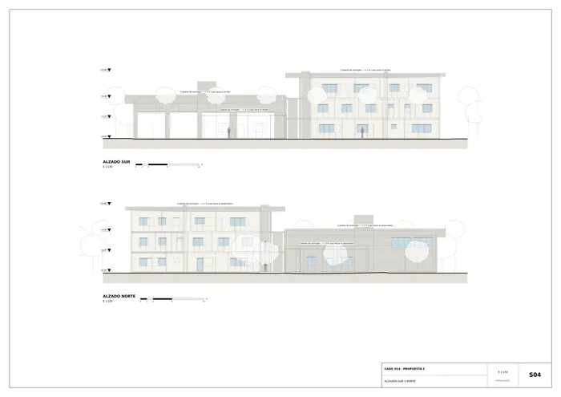
S04 · Alzados sur y norte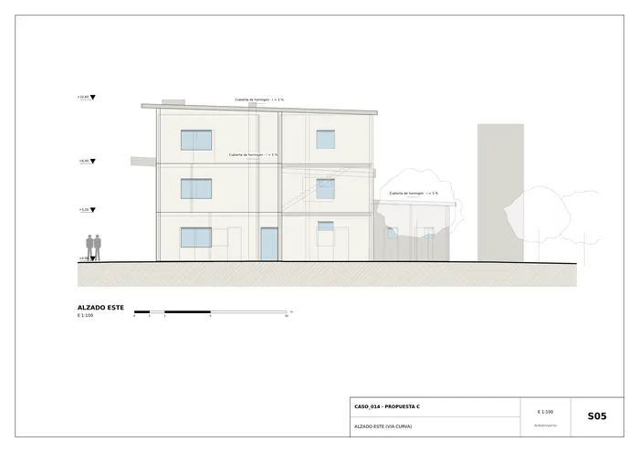
S05 · Alzado este (vía curva)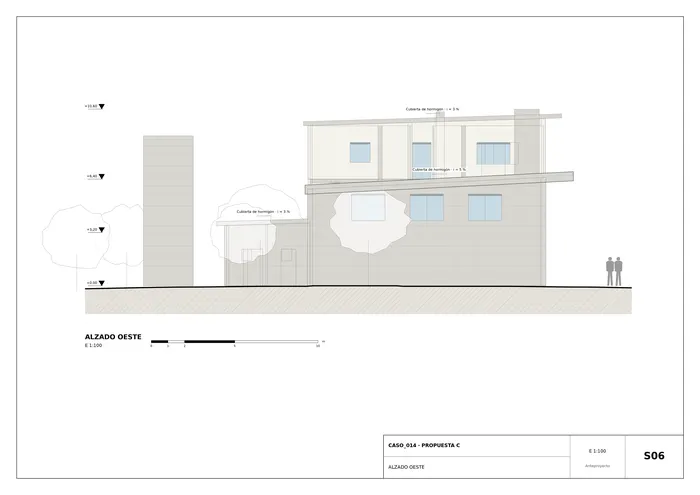
S06 · Alzado oeste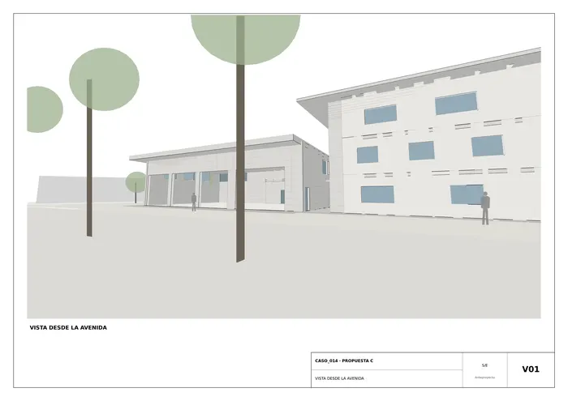
V01 · Vista desde la avenida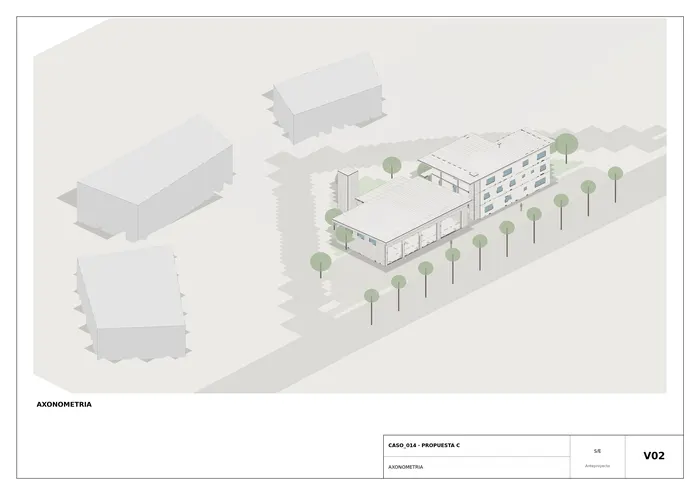
V02 · Axonometría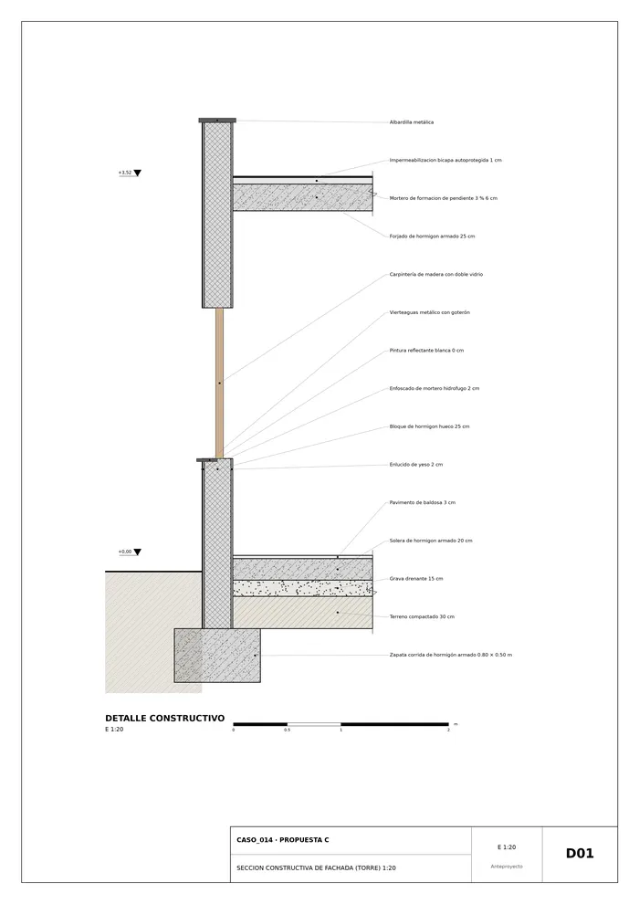
D01 · Sección constructiva de fachada torre 1Memoria de la propuesta tal como la entregó el sistema. Se han omitido las notas internas del proceso (revisiones, control de reconocimiento y referencias a archivos de trabajo).